“O nosso #CapitalHumano é nosso maior patrimônio. É ele que nos destaca e diferencia no
mercado. São vocês que fazem a Hepta ser uma empresa que entrega competência como serviço”
Roberto Villares - Diretor Executivo
Esse é um sistema dedicado a conhecer a formação e habilitações técnicas e profissionais de todo o #TImeHepta. Contamos com sua participação para garantirmos a atualização dos dados e a melhoria constante da ferramenta.
O sistema é para todo o #TimeHepta e deve receber todo tipo de formação. Todos os colaboradores devem cadastrar seus exames e certificações, diplomas e certificados de cursos diversos e diploma de formação escolar (ensino fundamental, médio, superior e/ou pós-graduação). Entenda a diferença entre os três tipos de formação e quais documentos nos interessam.
Toda e qualquer documento comprovatório de certificação e exames profissionais, cursos dos mais variados temas e cargas horárias, além da escolaridade formal devem ser cadastrados. Esse sistema tem como objetivo fazer a gestão completa da formação de todos os colaboradores, logo é aberto para a inclusão de todo tipo de conteúdo educacional e profissional.
O módulo de Formação foi organizado em três grandes grupos:
1. Certificações e exames: devem ser incluídos aqui todas as provas e exames técnicos, obrigatórios ou opcionais na definição do seu cargo. Aqui estão enquadradas todas as certificações corporativas, isto
é, certificados de cursos previstos nos trilhos de desenvolvimento e trilhas de aprendizagem da Academia Hepta, emitidos ou não pela Hepta.
Exames são as provas que você precisa passar para obter uma certificação. Algumas certificações exigem apenas que você passe em um único exame, enquanto outras exigem mais de um. Certificações demonstram
proficiência técnica. Aqui estão enquadradas todas as certificações técnicas e corporativas, isto é, certificados de cursos estabelecidos nos trilhos de desenvolvimento e trilhas de aprendizagem da Academia Hepta, emitidos
ou não pela Hepta.
2. Cursos: espaço para inclusão de cursos livres, cursos técnicos e profissionalizantes e cursos de extensão nos mais diferentes temas e formatos. Devem ser incluídos aqui os cursos e treinamentos de qualquer área, desde que não se enquadrem nos outros dois grupos (certificações/exames ou escolaridade). Por exemplo, se você fez um curso preparatório para a certificação Microsoft 365 e recebeu um certificado da instituição formadora, ele deverá ser cadastrado nesse espaço. Assim, mesmo que você não tenha finalizado os exames e a certificação em si, obteve um certificado do curso e já deve incluir em seu cadastro de formação.
3. Escolaridade: como o nome diz, esse é o espaço para incluir diplomas de sua escolaridade, sendo importante incluir os dados do nível mais alto de formação. Assim, se você concluiu o ensino médio ou superior e fez um curso técnico, profissionalizante ou de extensão, deve inserir aqui apenas o diploma do ensino médio ou superior, pois apenas eles indicam o grau de escolaridade. Por outro lado, se você tem pós-graduação é importante incluir também o(s) diploma(s) de graduação.
Somos uma empresa de TI, logo teremos muitas certificações e exames nesta área. Para muitos cargos, elas são inclusive obrigatórias. Mas também devem ser cadastrados certificações e exames de outras áreas, por exemplo proficiência em idiomas e formação profissional.
Todas os exames/provas e certificações técnicas e profissionais dos mais diversos fornecedores (AWS, Microsoft, Citrix, HDI, ITIL, PMI, etc) devem ser inseridos no sistema, inclusive os descontinuados. Entenda por que você deve cadastrar exame/prova e certificação e porque precisamos também dos exames/provas e certificações descontinuados.
Se a sua certificação não estiver na lista, clique aqui para que a equipe da Academia Hepta possa avaliar e definir pela inclusão ou não. Você será informado quando estiver disponível.
Lembre-se que algumas provas são utilizadas para mais de uma certificação, por isso, é muito importante que o colaborador cadastre todas as provas que fez, além da certificação obtida. Assim, será possível para a GPC identificar, por exemplo, colaboradores que já tem parte das provas para uma outra certificação.
Se o exame ou certificação que você fez não estiver na lista, clique aqui para que a equipe da Academia Hepta possa avaliar e definir pela inclusão ou não. Você será informado quando estiver disponível.
Mesmo descontinuados ou fora de validade, esses exames e certificações indicam conhecimento e habilidade técnica. Também é importante destacar que nos contratos e licitações podem esses exames e certificações podem ser solicitados, ou podem surgir como opções de substituição.
Se o exame ou certificação que você fez não estiver na lista, clique aqui para que a equipe da Academia Hepta possa avaliar e definir pela inclusão ou não. Você será informado quando estiver disponível.
Sim! Todo tipo de diploma e certificado de formação profissional deve ser inserido. Nosso time não é formado apenas na área de tecnologia e um bom profissional é a soma de diversos conhecimentos e habilidades que formam um grande caldeirão de competências.
O formulário de cadastro de certificações e exames apresenta uma longa lista de opções, mas se você não encontrar o nome do seu exame ou certificado, basta clicar aqui (ou na opção de indicar certificação que aparece no formulário) e enviar os dados para avaliação da equipe da Academia Hepta. Eles irão avaliar sua sugestão, verificar se já consta na lista com nome similar e, se for o caso, inserir a nova opção na lista. Qualquer que seja o resultado, você receberá um email de resposta.
Nos formulários de Cursos e Escolaridade, o nome do curso é livre. Já a lista de instituições de ensino é de responsabilidade do Ministério da Educação. Se você não encontrou a instituição onde se formou, envie todas as informações para que a GPC possa avaliar se há similaridade (por exemplo, se a instituição mudou de nome – UniCeub se chamava Ceub há alguns anos) e, se for o caso, possa incluir o nome na lista.
Para que possamos ter certeza que seu cadastro está atualizado, mesmo sem nenhum exame ou certificação cadastrada, clique no link “Confirmar que meu cadastro está atualizado”.
Não deixe de incluir cursos e sua escolaridade. Todas essas informações são muito importantes para traçarmos as melhores práticas e trilhas de aprendizagem para o crescimento profissional do nosso #capitalhumano.
Sempre que você for aprovado em um exame, tirar uma certificação, concluir um curso ou grau de escolaridade deve realizar o cadastro. Assim você mantém seus dados sempre atualizados.
Em certificação/Exame, ao começar a digitar pelo termo da certificação, exame irá aparecer uma lista para que você encontre mais rápido o que procura.
Se preferir, antes de digitar no campo, confira a lista completa que está organizada por ordem alfabética.
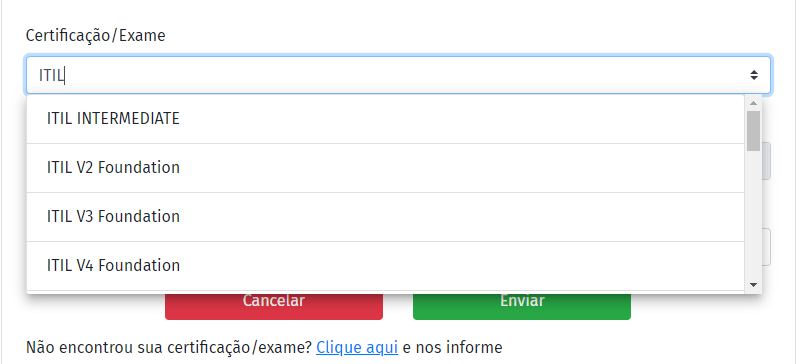Se você não encontrar sua prova ou certificação na lista, basta clicar no link disponível na parte inferior do cadastro e preencher o formulário com os dados solicitados.
Em documento, selecione certificado para comprovar a realização da certificação ou exame informado. O sistema aceita arquivo em PDF com limite de tamanho de até 1GB.
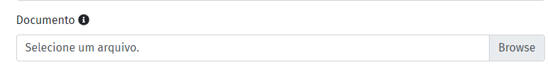Por fim, informe a data de emissão e data de validade (se houver) e envie. Se mudar de ideia e quiser cadastrar em outro momento é só cancelar ou sair da página.
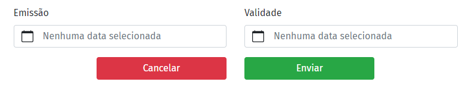Sem nenhum certificado, certificação ou exame para cadastrar, isso significa que o seu cadastro está atualizado, portanto, clique no botão “cadastro atualizado” // clique no link “Confirmar que meu cadastro está atualizado”. Essa informação também é muito importante para traçarmos as melhores práticas e trilhas de aprendizagem para o crescimento profissional do nosso #capitalhumano.
Em caso de dúvidas e sugestões, envie e-mail para academia@hepta.com.br
Lembre-se que esse espaço deve ser usado para inserção de todos os cursos, mas se você realmente não tem nenhum curso para cadastrar, isso significa que o seu cadastro está atualizado, portanto, clique no link “Confirmar que meu cadastro está atualizado”. Essa informação também é muito importante para traçarmos as melhores práticas e trilhas de aprendizagem para o crescimento profissional do nosso #capitalhumano.
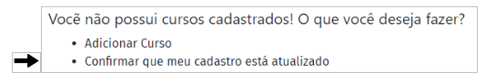Para cadastrar os seus cursos, clique em Adicionar Curso e preencha o formulário abaixo.
Os campos Nome do curso e Instituição são livres, ou seja, não há uma lista prévia com opções para serem selecionadas.
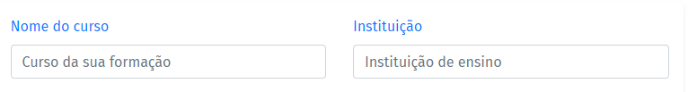Preencha a carga horária e ano de conclusão. Em Certificado, selecione o documento para comprovar a realização do curso informado.
O sistema aceita arquivo em PDF com limite de tamanho de até 1GB.
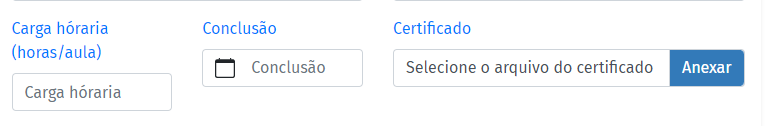Logo abaixo, existe um campo para que possa fazer uma descrição e inserir informações sobre o curso cadastrado. Por último, clique em salvar .
Se mudar de ideia e quiser cadastrar em outro momento é só cancelar ou sair da página.
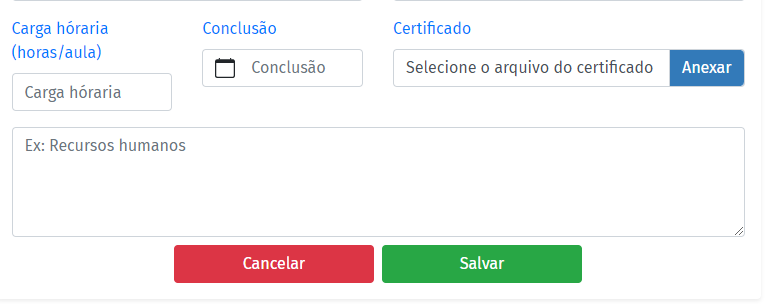Em caso de dúvidas e sugestões, envie e-mail para academia@hepta.com.br
Em escolaridade, o campo é uma lista suspensa com todos os graus/níveis de escolaridade do básico ao avançando, selecione o grau em que se enquadra para continuar preenchendo o formulário.
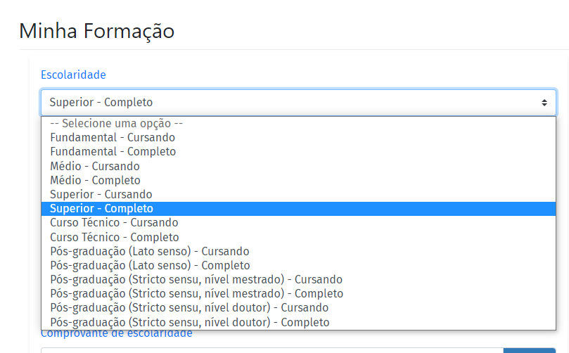Informe o nome do Curso conforme consta no diploma.
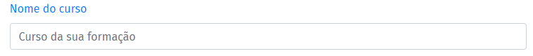Em Instituição, ao começar a digitar pelo menos 5 letras do nome da instituição irá aparecer uma lista para que você encontre mais rápido o que procura.
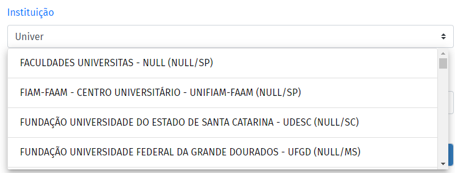Se não encontrar a sua instituição clique no link de email abaixo do campo para solicitar a inclusão e volte para preencher quando estiver cadastrada.
Continuando, informe a carga horária e data de conclusão ou previsão de término.
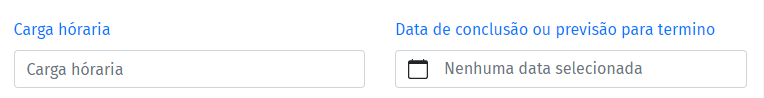Por fim, selecione o documento para comprovar a situação da escolaridade, pode ser uma declaração de matrícula ou certificado, depois é só salvar.
O sistema aceita arquivo em PDF com limite de tamanho de até 1GB.
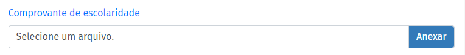